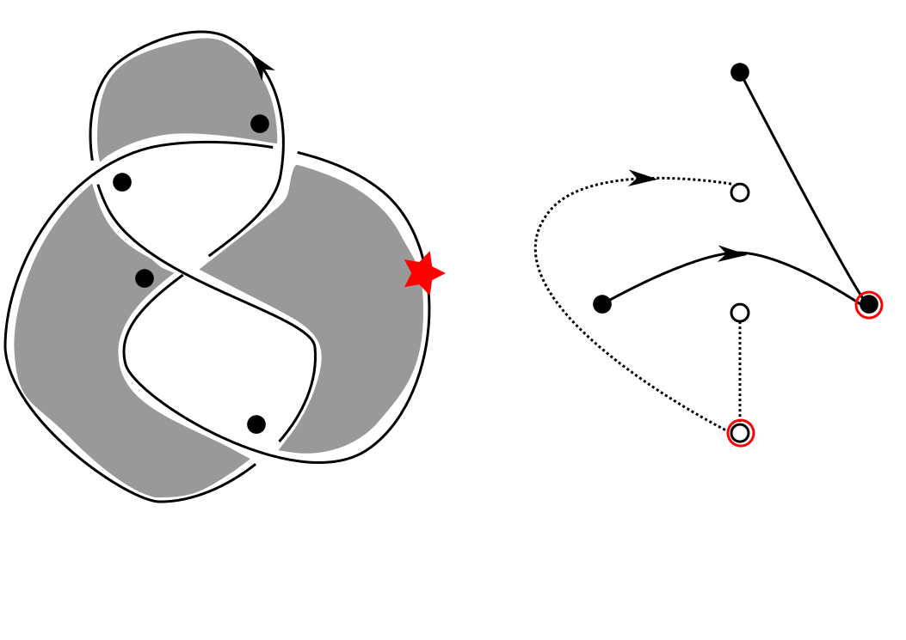

Kauffman state sum algorithm for the Alexander polynomial
This is Python code which implements the Kauffman state sum algorithm for the Alexander polynomial. In addition to computing an Alexander polynomial, it produces a genrating set for the knot Floer complex, and determines whether the knot diagram input to the program satisfies the 'unique state property', and returns a message indicating whether the knot is fibered, not fibered, or indeterminate.

As a subroutine, the program generates all of the spanning trees of the black graph corresponding with the checkerboard coloring of the knot, and finds a minimal weight spanning tree. (Please see the disclaimers in the instructional PDF).
About
email: amoore at math dot ucdavis dot edu
office: MSB 2151
office hours: T 12-1, W 3-4
My upcoming talks
- Mathematics Colloquium, Towson University, Towson MD Dec. 8th, 2017
- Eastern Illinois Integrated Conference in Geometry, Dynamics, and Topology Apr. 6-8, 2018
- Thompson-Scharlemann-Kirby triple birthday conference. Berkeley, CA Jun. 25-29, 2018
Past conferences I've co-organized
- Topology in dimension 3.5: A conference in memory of Tim Cochran June 1-4, 2016
- AMS Sectional at Loyola University October 3-4, 2015. Group photo here!